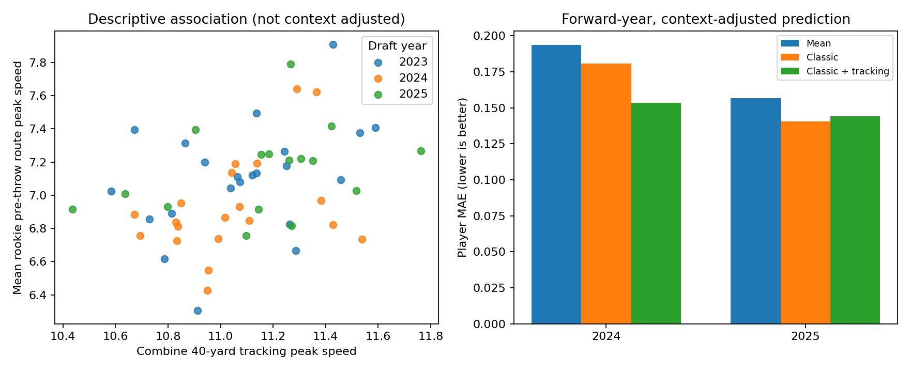

Hız ilişkisi var.
Ek tahmin faydası henüz tutarlı değil.
Combine'daki yüksek koşu hızı maçtaki rota hızıyla ilişkili çıktı. Ancak klasik 40-yard süresi, boy ve kilo modeline eklenen sensör özellikleri iki test yılında aynı avantajı sağlamadı.
58
analiz edilen pas yakalayıcı10.944
uygun çaylak maç kaydı22,65 milyon
taranan takip satırıÖlçümün tutarlılığı ile tahmin gücü farklı şeyler
- İki Combine denemesi arasında yüksek hız korelasyonu: 0,89 (81 oyuncu).
- Bizim erken hız ölçümümüzün tekrar korelasyonu: 0,15.
- Combine yüksek hızı ile maçtaki rota hızı korelasyonu: 0,38 (58 oyuncu).

Erken hız ölçümü yaklaşık bir başlangıç anına dayanıyor; resmi hızlanma testi olarak yorumlanmamalı.
Sonraki yılı tahmin etme testi
| Test yılı | Oyuncu | Klasik model | + Sensör | MAE sonucu |
|---|---|---|---|---|
| 2024 | 20 | 0.1808 | 0.1535 | İyileşti |
| 2025 | 16 | 0.1405 | 0.1442 | Kötüleşti |
Hata düşükse model daha iyi. 2024'te yaklaşık %15 iyileşme, 2025'te yaklaşık %3 kötüleşme var. Her iki farkın belirsizlik aralığı sıfırı içeriyor.

Sonuç: Bu verilerle yeni bir oyuncu sıralaması veya klasik testlerden kesin üstün bir model önermiyoruz.
Dosyalar hazır
- Türkçe araştırma özeti
- İngilizce yarışma yazısı · 1187 kelime
- Çıktılarıyla notebook
- Temiz notebook
- Kaggle'a taşıma adımları
- Olumlu ve olumsuz bütün denemeler
- Teslim paketi ZIP
Yerel doğrulama geçti: 6 kod hücresi, 6 çıktı karşılaştırması, sıfır notebook hatası.
Kaggle'a yükleme yapılmadı. Çalışma keşifseldir; bir yarışma derecesi veya gelecekteki başarı garantisi değildir.